La vidéo de *Pursuing AI* propose un combat de titans entre deux des modèles d'intelligence artificielle générative les plus avancés du moment : **Claude Fable 5** et **GPT-5.6**. À travers l'analyse comparative de cas d'usage concrets extraits de la plateforme X (anciennement Twitter), le créateur décortique les capacités de ces deux intelligences artificielles sur des terrains complexes tels que l'animation 3D au style voxel, la génération de environnements de jeux vidéo interactifs, et la simulation architecturale. L'analyse met en lumière la rivalité féroce qui oppose ces géants, chacun démontrant des supériorités sectorielles nettes selon que l'on recherche le réalisme visuel brut ou l'interactivité poussée.
Pour mener à bien cette démonstration comparative, la méthode du créateur repose sur une observation empirique rigoureuse, juxtaposant des prompts similaires soumis aux deux intelligences artificielles. Il évalue méthodiquement des critères techniques précis : la fluidité des mouvements, la fidélité physique, la qualité de l'éclairage et le degré d'interactivité (comme la navigation dans des environnements ou l'utilisation d'objets). Cette approche séquentielle permet d'isoler les points forts de chaque écosystème sans parti pris technique.
Pour les créateurs de vidéo, les vidéastes et les développeurs de contenu, ces enseignements redéfinissent les standards de la production visuelle assistée par IA. Comprendre les nuances de performance entre **Claude Fable 5** et **GPT-5.6** permet d'optimiser le choix des outils selon le livrable attendu : privilégier le rendu cinématographique et l'esthétique globale d'un côté, ou miser sur l'interactivité dynamique de type "moteur de jeu" de l'autre. C'est une feuille de route indispensable pour anticiper les workflows de demain dans la création de mondes virtuels.
Claude Fable 5 est de retour et GPT-5.6 est enfin là. Mais il n'y a qu'une seule question. Qui est réellement en train de gagner ? Regardons les vrais exemples que les gens publient sur X. C'est Pursuing AI et vous regardez le Research Report. Commençons par cette animation de paon style voxel Minecraft générée par Fable 5. À première vue, ça a l'air plutôt bien. L'animation est fluide et le style global est impressionnant. Mais comparez-la maintenant avec la génération de GPT-5.6. La différence
Interface & Outils : Interface de présentation vidéo / démo de générations d'IA.
Contenu textuel & Code : Textes visibles : "NOW SHOWING FABLE 5", "CALIBER NYX-01", codes et options textuelles en bas à gauche de la vidéo de la voiture.
Action / Démonstration : Présentation d'exemples de générations de modèles vidéo par IA (Fable 5 et GPT-5.6) incluant des animations de style voxel (paon, voiture) et des rendus complexes 3D.
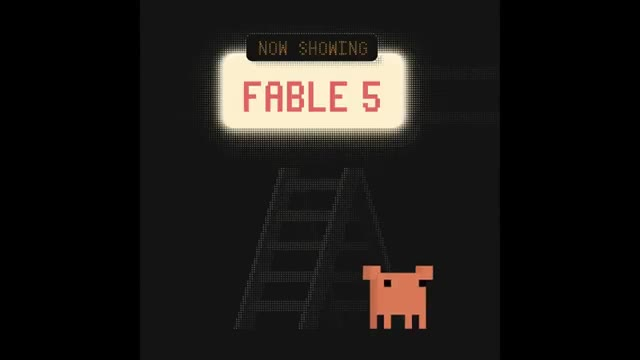
🔍 Agrandir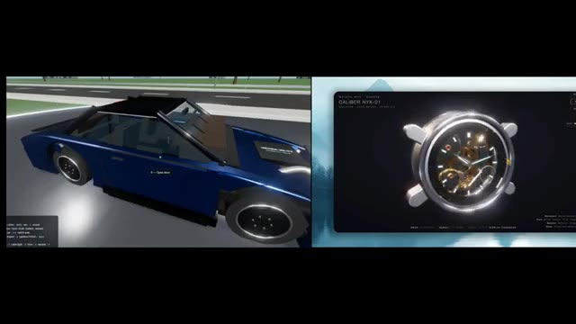
🔍 Agrandir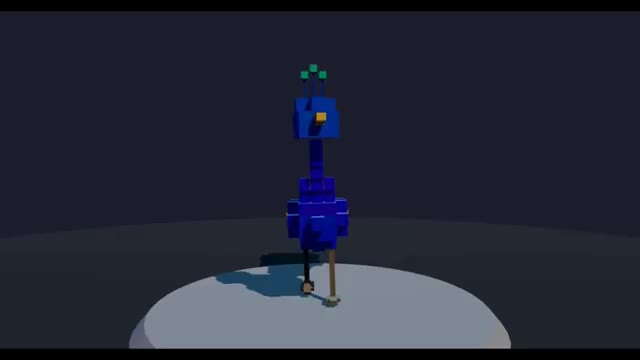
🔍 Agrandir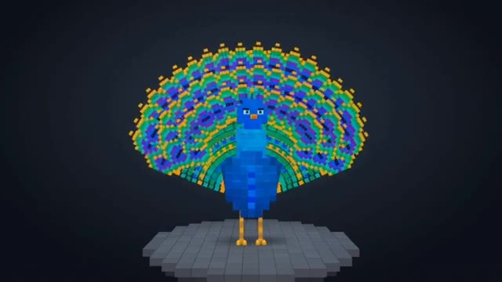
🔍 Agrandirdevient clair presque immédiatement. L'animation des plumes du paon a l'air beaucoup plus fluide, le mouvement du corps semble plus naturel, et le mouvement global a un flux beaucoup plus réaliste. Fable 5 offre définitivement un bon résultat, mais dans cette comparaison, GPT-5.6 l'emporte clairement. Avant de continuer, un grand merci au sponsor d'aujourd'hui, U7Buy. Si vous avez pensé à vous procurer ChatGBT+, mais que vous ne voulez pas payer le prix mensuel complet, U7Buy vaut le détour.
Interface & Outils : Navigateur web affichant la plateforme U7Buy et interface vidéo de comparaison.
Contenu textuel & Code : Texte affichant "FABLE 5" et "GPT 5.6", ainsi que le site "U7Buy" avec divers bannières de jeux.
Action / Démonstration : Présentation comparative de deux modèles d'IA générative de vidéo puis affichage publicitaire du site partenaire.
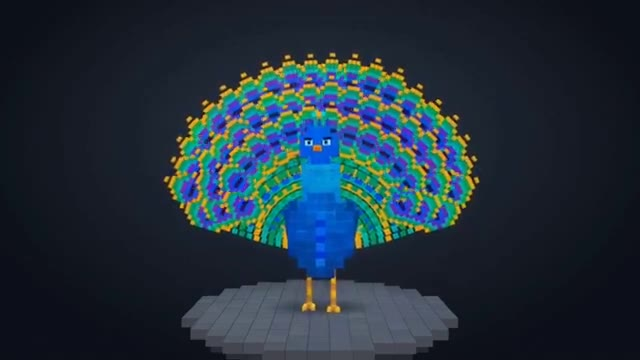
🔍 Agrandir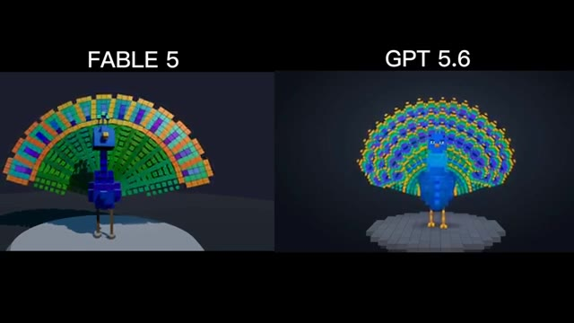
🔍 Agrandir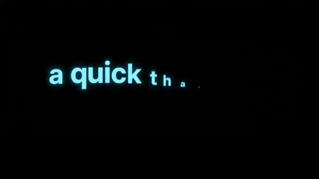
🔍 AgrandirIls proposent ChatGBT+, des options d'abonnement à des prix inférieurs selon l'offre, et ils ont actuellement une note Trustpilot de 4,8 étoiles basée sur plus de 47 000 avis. Le processus est simple. Il vous suffit de visiter le lien dans la description, de choisir une offre ChatGBT+, d'examiner la note du vendeur et les détails du compte, et lors du paiement, d'utiliser mon code PURSU pour obtenir 5 % de réduction supplémentaire.
Interface & Outils : Navigateur web affichant le site e-commerce U7BUY et une page de profil Trustpilot.
Contenu textuel & Code : Textes visibles : "U7BUY", "ChatGPT Accounts for Sale", "Trustpilot 4.8 Excellent", "Subscription Account", "PURSU 5% OFF", options de paiement (Visa, Crypto, Google Pay).
Action / Démonstration : Navigation sur le site U7BUY pour présenter les abonnements ChatGPT, la note Trustpilot et l'application d'un code promo lors du paiement.
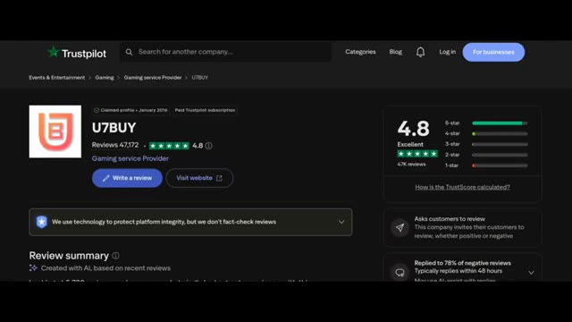
🔍 AgrandirSi vous cherchez un moyen plus abordable d'accéder à ChatGPT+, consultez U7Buy en utilisant le lien ci-dessous. Merci encore à U7Buy d'avoir sponsorisé cette vidéo, et maintenant revenons-en à nos moutons. Passons maintenant à quelque chose de beaucoup plus stimulant. Ce jeu généré par Fable 5 a été partagé par l'utilisateur Mirochill.
Interface & Outils : Navigateur web affichant le site e-commerce U7Buy puis une publication sur le réseau social X (Twitter).
Contenu textuel & Code : Sur U7Buy, les options d'abonnement affichent 'ChatGPT Accounts for Sale', 'Plus (Private)', '1 Month $4.99'. Sur l'écran promotionnel, le texte indique 'USE pursue 5% off code'. Sur X, le post de @mirochill indique 'GPT 5.6 Sol Pro vs Claude Fables 5' avec une image de jeu vidéo montrant une ligne 'START' et des personnages à vélo.
Action / Démonstration : Navigation sur le site web promotionnel U7Buy puis affichage d'un post X montrant un test de jeu vidéo généré par IA.
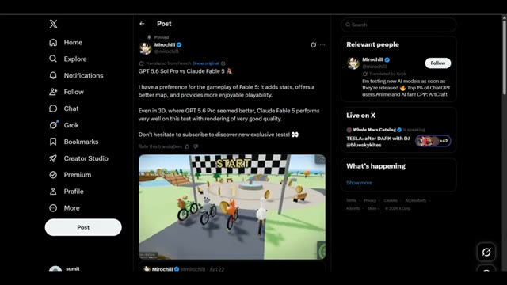
🔍 AgrandirComme vous pouvez le voir, le gameplay a l'air fluide, la physique est impressionnante, la carte semble plus grande, et même l'animation de collecte des pièces a l'air soignée. Dans l'ensemble, Fable 5 fait un très bon travail avec le rendu des jeux. Mais maintenant, comparez-le avec le GPT 5.6. La première chose que vous remarquerez probablement, c'est que le personnage brille un peu trop.
Interface & Outils : Interface de jeu vidéo avec mini-carte en bas à droite, compteurs de score et classement en haut à droite.
Contenu textuel & Code : Éléments de jeu 3D stylisés, pièces dorées à collecter, ligne de départ, noms des joueurs (Moss, Bill, Pippa).
Action / Démonstration : Les personnages circulent sur des vélos, collectent des pièces et franchissent la ligne de départ/arrivée sur un circuit asphalté.
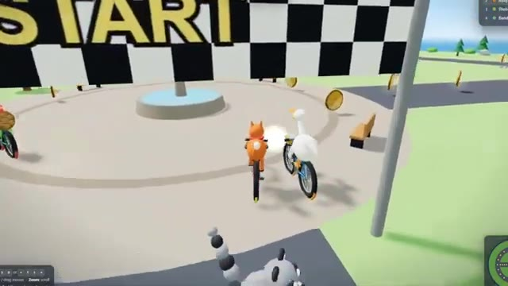
🔍 Agrandir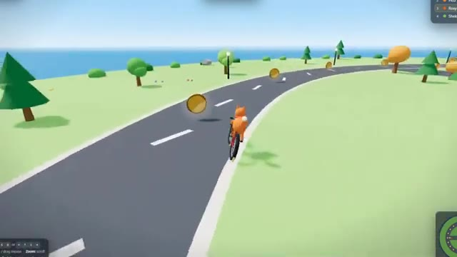
🔍 Agrandir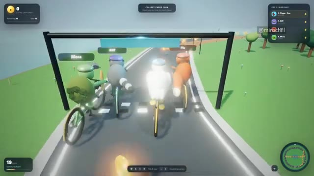
🔍 AgrandirCependant, l'animation du jeu et la physique sont toujours très bonnes. Cela dit, en ce qui concerne la qualité de rendu, Fable 5 fait vraiment un meilleur travail dans cet exemple. Voici maintenant une autre comparaison intéressante. Il s'agit d'une maison en 3D générée par Fable 5. L'éclairage est vraiment bon, mais il y a une limite. On ne peut pas vraiment se déplacer à l'intérieur de la maison. Regardez maintenant la version de GPT 5.6. La toute première chose que vous remarquerez, c'est que vous pouvez réellement vous déplacer dans la maison. Vous pouvez ouvrir et fermer des portes, ouvrir des tiroirs, allumer et éteindre les lumières.
Interface & Outils : Interface web de la plateforme X (anciennement Twitter) et interfaces de visualisation de scènes 3D interactives.
Contenu textuel & Code : Texte du tweet : "Claude Fable 5 is back, here's a comparison with GPT 5.6 Pro 👀... It's impossible to move around in the Fable 5 version, but the lighting is better...". Bouton d'interaction à l'écran : "F / Click : switch table lamp on". Mentions du profil "@mirochill".
Action / Démonstration : Le créateur navigue à travers des publications comparatives sur les réseaux sociaux et montre des séquences interactives permettant de manipuler des objets dans un environnement 3D généré par intelligence artificielle.
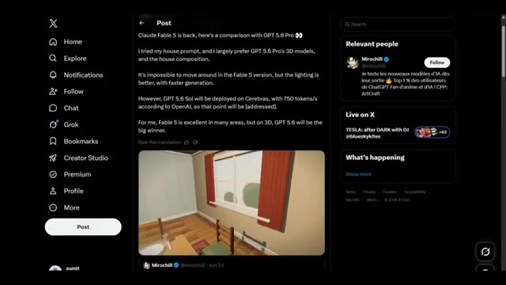
🔍 Agrandir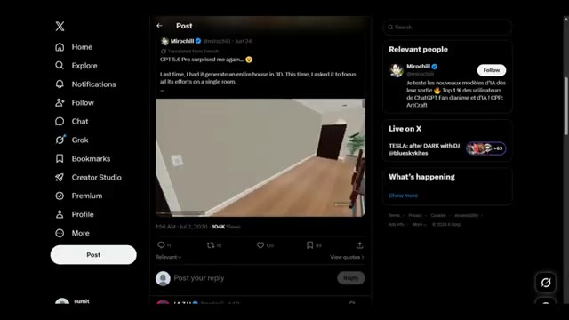
🔍 Agrandir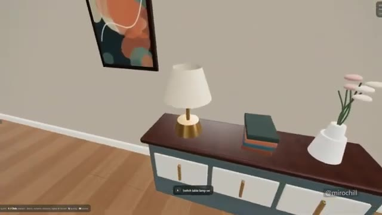
🔍 AgrandirEn gros, ça génère une maison qui ressemble plus à GTA V. On peut même regarder dehors à travers les fenêtres. La seule chose qui lui manque comparé à Fable V, c'est la qualité de l'éclairage. Mais dans l'ensemble, c'est une génération vraiment impressionnante et qui offre beaucoup plus d'interaction que la version Fable V. Passons maintenant à l'exemple probablement le plus intéressant, un jeu de tir.
Interface & Outils : Interface de jeu vidéo généré par IA avec des indications d'interaction textuelles à l'écran, et navigateur affichant le réseau social X (Twitter).
Contenu textuel & Code : Textes d'interface en bas de l'écran « E / Click interact », « doors, curtains, drawers, lights », mentions « @mirochill », ainsi qu'un post sur X de @chetaslua comparant Fable 5 et GPT 5.6 Pro.
Action / Démonstration : Navigation et démonstration interactive à l'intérieur d'un environnement de maison généré par IA, puis affichage d'un post comparatif sur X concernant des modèles de génération.
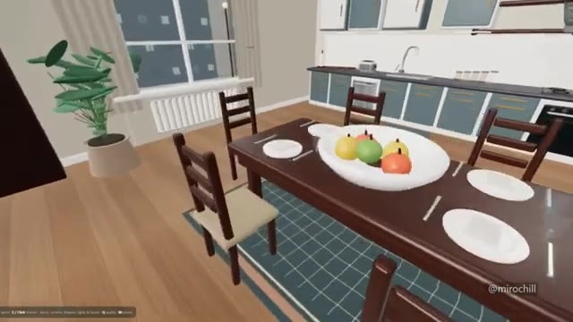
🔍 Agrandir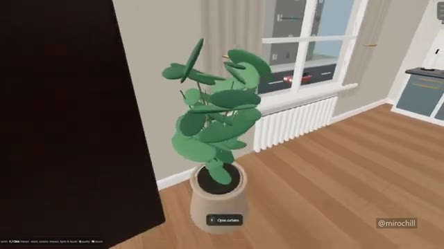
🔍 Agrandir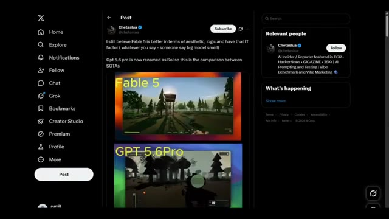
🔍 AgrandirC'est la génération Fable 5. Honnêtement, on dirait un vrai jeu fait par des développeurs. L'animation de marche, le lancer de grenade, le fait de regarder à travers la lunette de visée, le mouvement de tir, tout semble naturel et soigné. Maintenant, comparez cela avec le GPT 5.6. L'animation de tir n'est pas aussi bonne, et le plus gros problème, c'est la lunette de visée.
Interface & Outils : Écran de comparaison vidéo divisé en deux parties, illustrant les performances de deux modèles d'IA différents sur le rendu de jeux vidéo en vue subjective (FPS).
Contenu textuel & Code : Texte jaune en haut à gauche de chaque section : "Fable 5" pour la vidéo supérieure et "GPT 5.6Pro" pour la vidéo inférieure. Les vidéos montrent des environnements de type jeu de tir en 3D avec des arbres, des rochers et des éléments d'interface de jeu (barre de vie, munitions).
Action / Démonstration : Comparaison visuelle de deux rendus de jeux vidéo générés par IA, illustrant les animations de personnages et les mécanismes de visée.
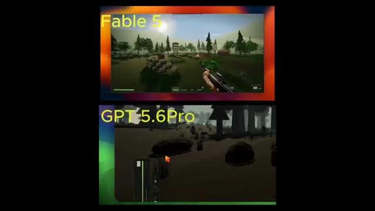
🔍 Agrandircomplètement fermé pour qu'on ne puisse pas vraiment voir à travers correctement. Donc après avoir regardé tous ces exemples, voici le bilan global. GPT 5.6 est vraiment bon en génération 3D, mais Fable 5 est meilleur en ce qui concerne la qualité de rendu et pour offrir une expérience plus fluide et plus naturelle.
Interface & Outils : Interface de comparaison comparative affichant des fenêtres de moteurs de rendu 3D labellisées "Fable 5" et "GPT 5.6 Pro".
Contenu textuel & Code : Étiquettes textuelles jaunes "Fable 5" et "GPT 5.6 Pro", vues subjectives de jeux vidéo avec des éléments d'interface utilisateur (viseur, compteur de munitions), modélisations 3D d'intérieurs de maison et d'animaux en blocs.
Action / Démonstration : Démonstration comparative de performances de génération 3D entre deux technologies différentes (Fable 5 vs GPT 5.6 Pro) à travers des environnements interactifs et des objets modélisés.
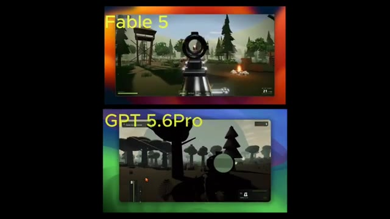
🔍 Agrandir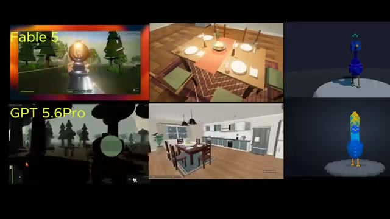
🔍 Agrandir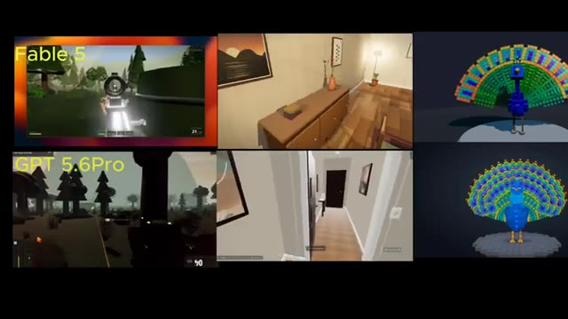
🔍 AgrandirEn même temps, GPT 5.6 obtient d'excellents résultats et bat même Fable 5 sur plusieurs exemples. La compétition est donc bien plus serrée que beaucoup ne le prévoyaient. Mais maintenant, je veux connaître votre avis. Lequel pensez-vous qui est réellement le meilleur ? Faites-moi part de vos réflexions dans les commentaires, et je vous retrouve dans le prochain rapport de recherche.
Interface & Outils : Écran de comparaison vidéo montrant des tests comparatifs de modèles d'IA (Fable 5 vs GPT 5.6 Pro) avec des rendus 3D, des environnements de jeux et des modélisations d'animaux.
Contenu textuel & Code : Mentions textuelles "Fable 5" et "GPT 5.6 Pro" étiquetant les différentes fenêtres de démonstration vidéo montrant des intérieurs de pièces, des paysages forestiers et un paon en voxels 3D.
Action / Démonstration : Comparaison visuelle côte à côte de plusieurs exemples de génération entre Fable 5 et GPT 5.6 Pro.
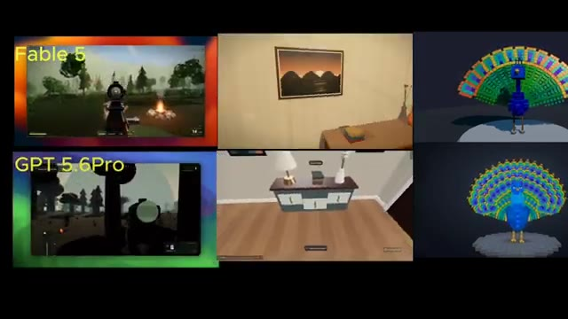
🔍 Agrandir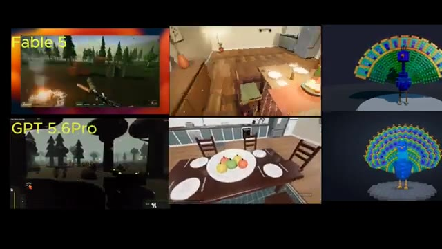
🔍 Agrandir